七日之约 + 源泉使魔（宠物）策划案 v3
0. 一页看懂
- 七日之约：7 天累计登录签到（断签不清零），老号也从第 1 天重新开始。第 1 天送一颗 水之卵（孵出来才知道品阶），第 2 天送 金·火猫，第 3–6 天每天送一只金色宠物，第 7 天送 红·狮子。送的是宠物本体，不是蛋。
- 源泉使魔：12 系魔法对应 12 种 Q 版人气动物（火猫、雷狗、熊猫、狮子、老虎…）。每系可上阵 1 只，给这一系魔法加魔攻。
- 掉蛋：每局结算按本局击败的守关者数量判定，越多越容易掉。蛋上就写着是哪一系，孵出来才知道品阶（绿 / 蓝 / 紫 / 金 / 红）。
- 养成：品阶决定等级上限（10 / 20 / 30 / 40 / 50），升级靠吞噬其他宠物，品阶越高给的经验越多。
- 露脸：营地里随行宠物站在源泉边，点它进宠物界面；左上角「七日之约」「使魔」两个入口和右上角对称；战斗里它只是魔攻下方的一个小不点，施放它那一系时跳一下、「+N」飞进魔攻。
1. 宠物形象（12 只，概念图）
v3 重画：从「贴纸感的萌宠」改成魔幻的元素使魔——还是小体积、圆眼、可爱，但加了身上发光的符文纹路、元素光环 / 法阵、柔和的轮廓光和厚涂质感，色调贴近游戏的夜蓝紫基调，和薇丝塔、同行者头像放在一起不跳。每只保留自己元素的主色（火橙、水蓝、风青、土琥珀、光金……），一眼能认出是哪一系。
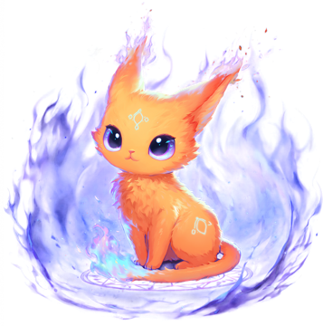
火猫 · 焰尾火魔法 · 耳朵和尾巴燃着魔焰，脚下火纹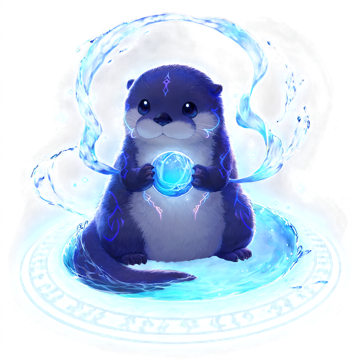
水獭 · 泡泡水魔法 · 身体半透明流水，抱着发光水球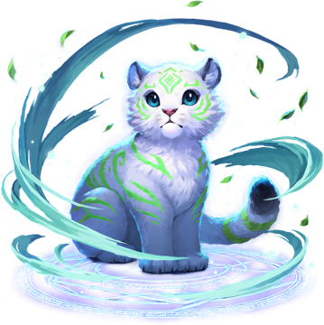
风虎 · 小岚风魔法 · 小白虎，青色发光条纹，风带缠身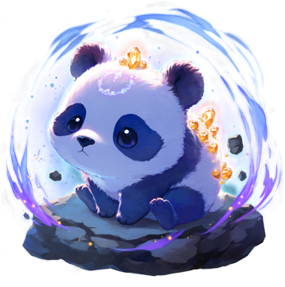
熊猫 · 墩墩土魔法 · 背上长着琥珀晶石，身边浮石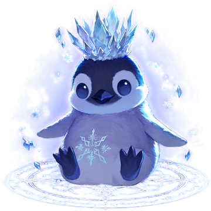
企鹅 · 霜冠冰魔法 · 头顶冰晶王冠，脚下冰之法阵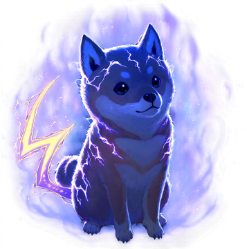
雷狗 · 闪闪雷魔法 · 柴犬，毛里窜着紫黄电光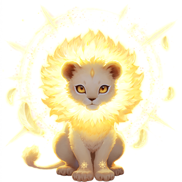
狮子 · 曦光明魔法 · 金色光之鬃毛，圣光光环与羽毛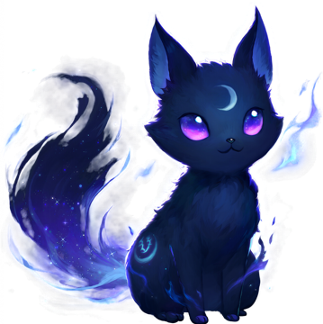
狐狸 · 夜影黑暗魔法 · 尾巴是装着星星的暗影，额上新月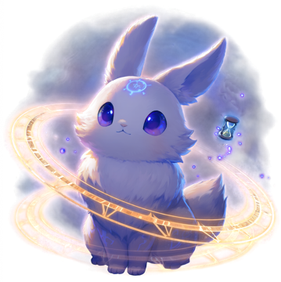
兔子 · 怀表时间魔法 · 金色时之环绕身旋转，小沙漏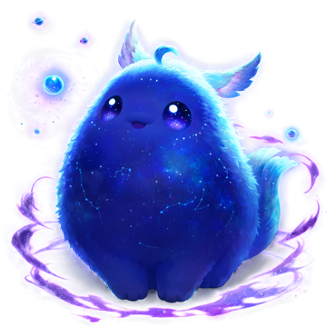
鲸鱼 · 星海空间魔法 · 身体就是一片星云，环绕小行星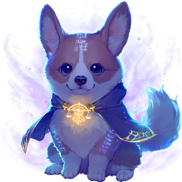
柯基 · 天秤秩序魔法 · 天秤徽章小披风，脚下秩序法阵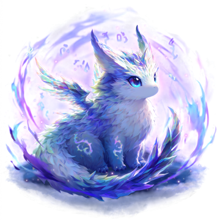
龙宝 · 幻彩混沌魔法 · 虹彩鳞片小飞龙，混乱魔力涡旋- 品阶怎么看出来：同一只动物 5 个品阶共用一张图，品阶靠外框和光：绿 / 蓝 / 紫 / 金 / 红描边 + 背光，金、红再加一圈飘动的光粒（红色额外有呼吸光）。美术量 = 12 张图。
- 动作：游戏里用「呼吸缩放 + 眨眼（替换一张闭眼差分）+ 开心跳一下」做待机和触发，不做骨骼动画。每只多出 1 张闭眼差分（NovelAI 局部重画，身体不动），共 24 张。
2. 七日之约（签到）
| 天 | 第 1 天 | 第 2 天 | 第 3 天 | 第 4 天 | 第 5 天 | 第 6 天 | 第 7 天 |
|---|---|---|---|---|---|---|---|
| 奖励 | 水之卵 开启宠物系统 | 金·火猫 | 金·水獭 | 金·风虎 | 金·熊猫 | 金·雷狗 | 红·狮子 |
| 对应魔法 | 水（品阶随机） | 火 | 水 | 风 | 土 | 雷 | 光明 |
- 越往后越好：第 2→7 天送的宠物对应的魔法一天比一天高阶（火 → 水 → 风 → 土 → 雷 → 光明），加的魔攻也一天比一天多；第 7 天是红色品阶。前 6 只刚好覆盖新手最常打的几系，送到就能用上。
- 累计登录：哪天没上不清零，下次上线接着领。按存档里「只增不减」的日期判断，改手机时间无效。
- 老号：更新后所有人（包括老玩家）都从第 1 天开始；老玩家第一次打开额外弹一句「七日之约开启，所有人从第一天开始」。
- 自动弹出：每天第一次回营地，等源泉残语播完后弹签到面板；关掉后营地右上角留「七日之约 · 第 N 天」入口，有可领时带红点。7 天领完入口消失。
- 领宠物的演出：点「领取」→ 卡片翻开 → 金 / 红光柱 → 宠物跳出来 → 「让它上阵」（默认自动上阵到对应系，第一只同时设为随行）。
3. 掉蛋与孵化
3.1 结算掉蛋（第 2 天宠物系统开启后）
| 本局击败守关者 | 0 | 1 | 2 | 3 | 4 | 5 | 6 | 7 | 8（登顶） |
|---|---|---|---|---|---|---|---|---|---|
| 掉蛋概率 | 10% | 25% | 38% | 50% | 60% | 70% | 80% | 90% | 100% + 30% 再一颗 |
- 保底：连续 3 局没掉，第 4 局必掉。
- 只算真实击败的守关者（绕过不算）；新手引导局、每日试炼、咒谱码局不掉（防刷）。
- 蛋的系别在掉落时就定了，蛋上看得见：60% 是本局施放次数最多的那一系（打什么流派就更容易出什么宠物），40% 是 12 系随机。蛋按系别上色、印着那一系的法阵符号，例如「雷之卵」。
- 蛋不知道品阶，孵出来才揭晓。
3.2 孵化
- 宠物页「孵化巢」：2 个孵化位，每颗 4 小时（真实时间）。蛋背包最多 10 颗。
- 可选：每颗蛋看 1 次视频，剩余时间减半（不看也能孵）。
- 孵好以后要玩家点开：蛋晃 → 裂开 → 品阶光柱（绿 / 蓝 / 紫 / 金 / 红，金红有专属音效和全屏光）→ 宠物跳出。
| 品阶 | 绿 | 蓝 | 紫 | 金 | 红 |
|---|---|---|---|---|---|
| 开出概率 | 50% | 30% | 14% | 5% | 1% |
| 等级上限 | 10 | 20 | 30 | 40 | 50 |
品阶保底：累计 30 次孵化没出金及以上，下一次必金；红色不设保底，留惊喜。
4. 效果与养成
4.1 加魔攻
- 每一系有 1 个上阵位，只能放同系宠物；12 系都能各上阵 1 只，集齐 12 系是长线目标。
- 施放某系魔法时，该系上阵宠物的加成直接加进魔攻（和「强化」走同一处，不改出牌规则）。
- 每级加的魔攻 = 这一系 Lv1 魔攻 × 3%，至少 1 点：
| 魔法 | 火 | 水 | 风 | 土 | 冰 | 雷 | 光明 | 黑暗 | 时间 | 空间 | 秩序 | 混沌 |
|---|---|---|---|---|---|---|---|---|---|---|---|---|
| 每级 +魔攻 | 1 | 1 | 1 | 1 | 1 | 1 | 1 | 2 | 3 | 4 | 4 | 5 |
| 金 Lv40 | +40 | +40 | +40 | +40 | +40 | +40 | +40 | +80 | +120 | +160 | +160 | +200 |
| 红 Lv50 | +50 | +50 | +50 | +50 | +50 | +50 | +50 | +100 | +150 | +200 | +200 | +250 |
4.2 吞噬升级
- 从 L 级升到 L+1 级需要 10 × L 经验（升到 10 级共 450，20 级 1,900，30 级 4,350，40 级 7,800，50 级 12,250）。
- 被吞的宠物提供：品阶经验 + 它已有经验的 80%；同系吞同系再 ×1.5。
| 被吞品阶 | 绿 | 蓝 | 紫 | 金 | 红 |
|---|---|---|---|---|---|
| 提供经验 | 50 | 150 | 450 | 1,350 | 4,000 |
- 例：金·火猫从 Lv5 升到 40 级约需 7,700 经验 ≈ 100 只绿（同系约 70 只），或 6 只金。长线能一直升，正好消化每天开出来的蛋。
- 宠物背包上限 30 只。吞金、红前二次确认并红字提醒；已上阵、随行的不能被吞。满级后经验条显示「已满」。
- 进化先不做，以后开放时满级是前提。
5. 界面（UX / UI）
5.1 营地主界面：入口挪到左上、和右上对称；随行宠物站在源泉边
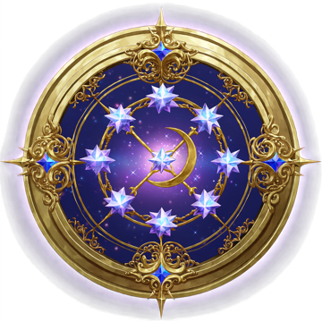
布局：右上角现在是「守泉人的馈赠」（长条）+「魔晶」（短条）两层；左上角镜像放两层：上面「七日之约」长条、下面「使魔」短条，宽高、圆角、间距和右边一一对应，左右重量平衡，顶栏不动。
七日之约特效（左图是 CSS 实时动画，真机照这个做）：
- 图标是一枚金色星盘（7 颗星宝石 = 7 天），比长条大一圈、探出边框，慢速旋转 + 呼吸光晕；
- 长条金边上每 3 秒扫过一道高光；周围 3 颗星点轮流闪烁；
- 有可领奖励时右上角「可领」红标上下弹跳；领完当天变成「明天再来」灰标，特效减弱为只有呼吸光；7 天领完入口消失，「使魔」上移占位。
使魔入口：图标就是你的随行宠物头像（换随行就跟着换），有孵好的蛋 / 新宠物时带红点。
随行宠物：站在源泉边，待机呼吸 + 眨眼；点它直接进宠物界面（和左上入口同一个页面），进之前它先轻跳一下、冒一句台词。
5.1b 战斗界面：宠物缩到很小，只占魔攻下面一小块空位
- 位置：魔攻气泡正下方「魔攻」二字的左下，约 34 dp（真机上大约指甲盖大小），这块在任何手牌数量下都是空的：不挡血条、魔法名、手牌、同行者栏、按钮。
- 平时：轻微呼吸，不发光、不说话（不抢战斗注意力）。
- 施放它那一系的魔法时：它跳一下，一个小小的「+20」从它头顶飞进上面的魔攻数字（左图每 4 秒演示一次），和同行者触发的飘字同一套节奏，不另加停顿。
- 不是它那一系的魔法、但别的上阵宠物有加成时：只在魔攻数字旁闪一下「+N」，不出宠物形象。
- 设置里加「战斗中显示宠物」开关，默认开。
- 随行使魔：玩家在宠物页选 1 只「随行」，它出现在营地和战斗里（不影响加成，加成看上阵）。第 2 天领到火猫时自动设为随行。
- 营地里点它：轻跳 + 一句台词（每只 6–8 句，按时间段和最近战绩挑，例如刚登顶时「我就知道你可以！」）。长按进宠物页。
- 击败守关者时随行使魔欢呼一下；倒下时它趴下（不遮挡致命魔法演出）。
- 没有宠物时（第 1 天）营地不显示，入口隐藏（遵循营地入口按进度开放的规则）。
5.2 界面示意
第 7 天 · 狮子 红
火魔法 · Lv12 / 40 火魔法 魔攻 +12
★ 随行中
还剩 1:42:10
孵好了！
这局你用雷魔法最多，蛋里也带着电
已放进孵化巢，4 小时后孵化
5.3 入口与流程
- 第 1 天：弹七日之约 → 领水之卵 → 引导点左上「使魔」→ 孵化巢里看到水之卵开始孵（4 小时）→ 之后的结算开始掉蛋。
- 孵好后（或第 2 天领到火猫时）：开蛋 / 领取演出 → 自动上阵并设为随行 → 回营地看到它站在源泉边。
- 第一次掉蛋：结算卡 + 薇丝塔一句「它在等你回来。」；第一次孵好：营地「使魔」入口红点 + 随行使魔头上冒「！」。
- 魔法书里每系页面顶上显示该系上阵宠物和它加的魔攻，点进宠物页。
6. 数据埋点
checkin_claim（day, reward, is_old_account）、pet_egg_drop（guardians, school, pity）、pet_hatch（school, grade, ad_speedup）、pet_devour（target_grade, food_count, lv_after）、pet_equip、pet_follow。看：更新前后两周 D1–D7 留存对比、第 2 / 7 天回访率、每日开蛋次数。
7. 开发量估计
| 项 | 内容 |
|---|---|
| 美术 | 12 只宠物定稿 + 12 张闭眼差分；12 色蛋（程序绘制 + 法阵符号复用）；签到面板、宠物页图标 |
| 系统 | 签到（累计、只增日期）、蛋掉落与保底、孵化计时、品阶随机与保底、吞噬经验、上阵加成（接到强化同一处）、存档迁移 |
| 界面 | 签到面板、宠物页四个标签、开蛋演出、营地随行使魔、战斗随行与加成飘字、结算掉蛋卡 |
| 验证 | 单元测试 + 模拟器跑通关率 + 无头压测（显存：12 张宠物图约 +20 MB） |
8. 需要你拍板
- 第 1 天送水之卵，宠物系统（孵化巢）改成第 1 天就开，可以吗？
- 送的金色宠物从 Lv5、红色从 Lv10 起，可以吗？
- 重画后的 12 只宠物，哪只还想换动物或改外形？
- 左上角「七日之约」+「使魔」的位置和特效方向是否 OK？
- 战斗里宠物放在魔攻下方、约 34 dp，大小是否合适？
- 掉蛋概率、4 小时孵化、品阶 50 / 30 / 14 / 5 / 1 和 30 次必金、每级加魔攻规则，沿用 v2 是否 OK？